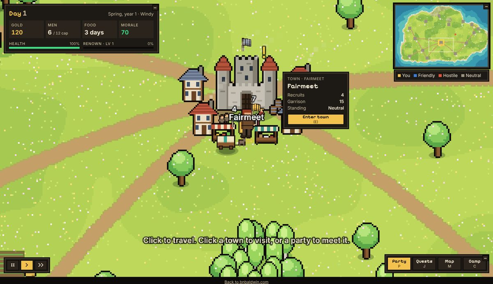
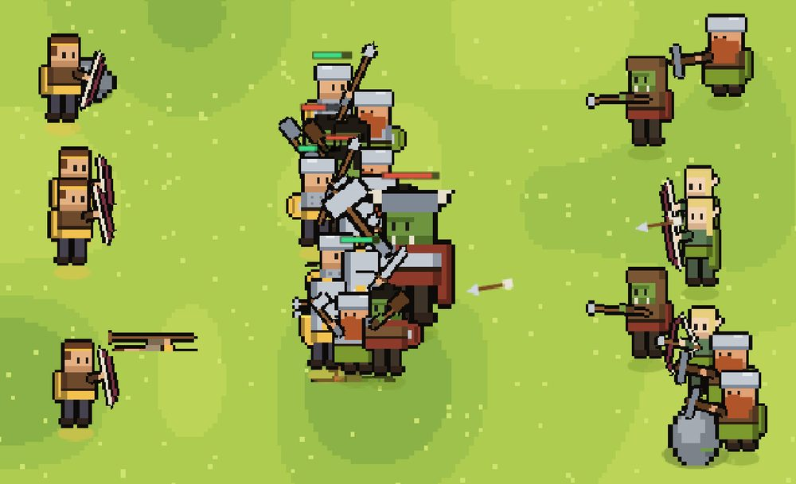
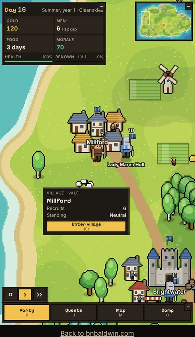
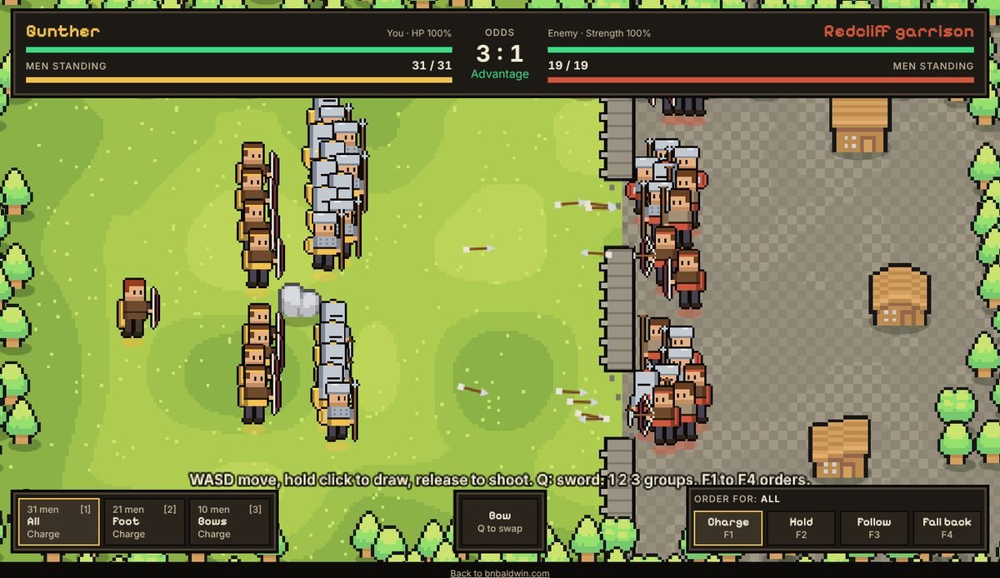
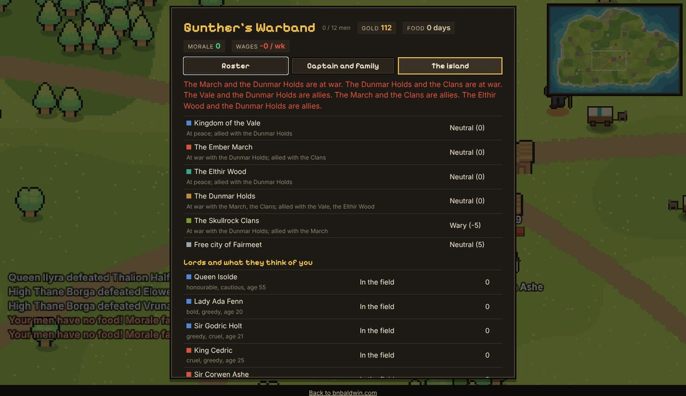

Gunther
A medieval warband sandbox that runs in any browser, phone included. Raise an army, trade between towns, and fight real-time battles and sieges while five rival realms go to war, make alliances and betray each other.

The problem
Gunther started in 2019 as a MonoGame project, then moved to Godot. Both versions stalled: they needed an install to play, so nobody played them, and the code had no clear structure to grow into a bigger game.
The goal for the rebuild: something anyone can play from a link on a phone or a laptop, with the depth of a simulation sandbox rather than a single arena.
What I built
- Two-layer game loop. A strategic map (travel, trade, recruit, diplomacy) feeds into real-time tactical battles, and the results flow back into the world.
- A world that runs without you. Five realms (humans, elves, dwarves and the orc clans) each have lords with traits and grudges. They declare wars, call allies to arms, refuse, and sometimes betray each other. Lords age, die and pass their titles to heirs.
- Skill-based combat. Directional sword swings, blocking and parrying, a bow you have to draw and aim, and orders for foot and archers. Armour and shields really stop arrows, so tactics matter more than numbers.
- Sieges and ownership. Towns have garrisons and walls; AI lords besiege them too, and the player can take and hold towns.
- A story campaign. Nine chapters told as dialogue with portraits, plus a short training fight that teaches the controls.


Engineering decisions
No build step
The game is plain JavaScript modules loaded straight by the browser, drawn on a canvas, and hosted on GitHub Pages. There is nothing to install or compile, so it deploys on every push and anyone can read the source.
Data, not code
Troops, realms, lords, places, goods, skills, balance numbers and the whole story live in JSON files. Changing the game's balance means editing a number, not a function. The same format powers mods: players can load a JSON file from the title screen to add troops or change rules.
All art drawn in code
Early versions used third-party sprites with unclear licences. Every character and piece of scenery is now painted by code at runtime, which removed the licensing question and made it easy to restyle everything at once.
Tested in a real browser
Each change was checked with scripted Playwright runs that start a campaign, fight battles and take screenshots at desktop and phone sizes. One bug, where the camera change broke aiming with a mouse, taught me that tests have to move the mouse and check the result, not just take a picture.

How it was made
I set the design, wrote the brief for each stage, playtested every version and decided what to change. Most of the code was written with Claude Code, an AI coding assistant, one pull request at a time. Working this way taught me to write precise specifications, to test what I'm told works, and to break a big idea into stages that can each ship.
Result
- Playable at bnbaldwin.com/gunther on desktop and phone, with saves kept in the browser.
- About 6,200 lines of JavaScript across 19 modules, plus 11 data files.
- Went from the first browser version to sieges, dynasties, diplomacy and a story campaign in 14 incremental releases.
